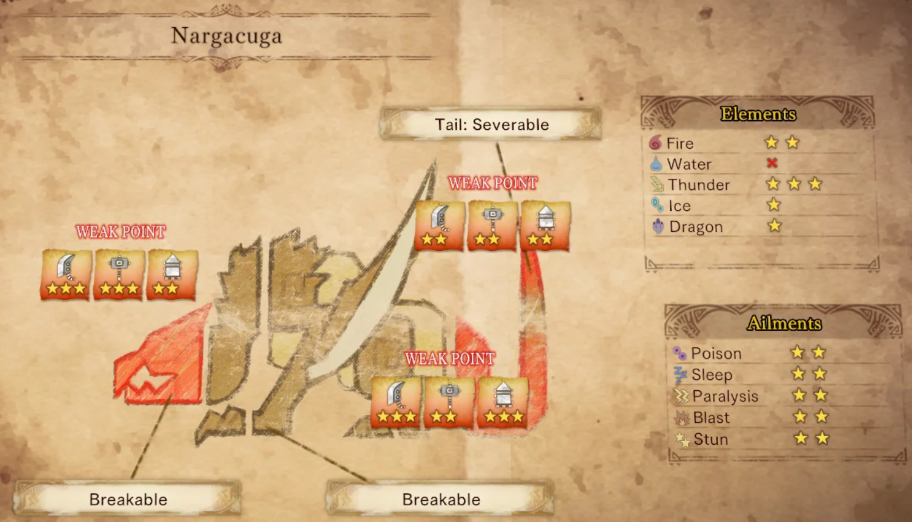

Nargacuga’s fight is defined by one thing- speed. Its attacks are blisteringly fast, and many of them have wide, sweeping ranges that make them difficult to avoid. Despite these advantages, Nargacuga is generally not considered an unfair monster. It has plenty of openings, including spots where it cannot hit you and long periods of inactivity between certain attacks. There are also many opportunities for counterplay through part breaks and clever use of items. Additionally, several of its movements are predicated by subtle sound cues. It is worth noting that items from Nargacuga are broadly useful for making gear suited to many different builds. Therefore, putting effort into getting good at Nargacuga’s fight can be very beneficial. Once you get the timings down, it might start to feel almost like a dance.

Tips
- Nargacuga has the ability to inflict the Bleeding status effect with its flung tailspikes. Bleeding will cause players to lose health over an extended period of time. Bleeding can be cured by either staying still and crouching for a few seconds or using certain consumables such as Astera Jerky.
- When Nargacuga’s eyes glow red, it has entered its enraged state. Its attacks grow even faster and more deadly, often overwhelming even skilled players. However, it also becomes vulnerable to Pitfall Traps (which it is otherwise immune to in its normal state). Bring these with you to force open a damage window.
- When Nargacuga sweeps its tail after jumping towards you, it always attacks from the right. This attack can easily be avoided by simply dodging left.
- Breaking each of Nargacuga’s wings will cause it to topple over and become vulnerable to attacks.
- While it is dangerous to linger near Nargacuga’s tail, severing it will limit the range of its many devastating tail-based attacks.
Bodily Attributes, Immunities, and Weaknesses

( X = immune | ☆ = weak | ☆☆ = very weak | ☆☆☆ = extremely weak )
Drop Charts
( Not included: Plunderblade and Investigation rewards )
| Carves and Hunt Rewards | Rewards for Part Breaks | |
|---|---|---|
| Master Rank |
Nargacuga Tailspear | Tail 35% Nargacuga Shard | Body 32% Nargacuga Blackfur+ | Body 24% Nargacuga Mantle | Body 2%, Tail 3% Nargacuga Hardfang | Body 17% Nargacuga Lash | Body 11%, Tail 62% |
Nargacuga Cutwing+ | Hindlegs 85% Nargacuga Blackfur+ | Hindlegs 15% Nargacuga Hardfang | Head 66% Nargacuga Shard | Head 32% Nargacuga Mantle | Head 2% |
| Quest Clear Rewards | Shiny Drops | |
|---|---|---|
| Master Rank |
Nargacuga Lash | 9% Nargacuga Blackfur+ | 28% Nargacuga Shard | 22% Nargacuga Hardfang | 16% Nargacuga Tailspear | 14% Nargacuga Cutwing+ | 11% |
Nargacuga Tailspear | 50% Nargacuga Blackfur+ | 28% Large Wyvern Tear | 22% |